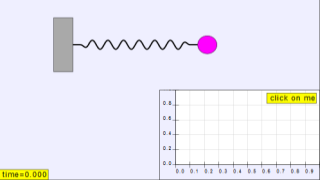

Mass and Spring
The Mass and Spring model displays the motion of a mass m situated at the end of a spring of length l and negligible mass. The motion is restricted to the horizontal dimension. (We choose a coordinate system in the plane with origin at the fixed end of the spring and with the X axis along the direction of the spring). The model assumes that the reaction of the spring to a displacement dx from the equilibrium point can be modeled using Hooke's Law, F(dx) = -k dx , where k is a constant which depends on the physical characteristics of the spring. Thus, applying Newton's Second Law, we obtain the following second-order ordinary differential equation:
where x is the horizontal position of the free end of the spring.
The Mass and Spring JS Model was developed by Wolfgang Christian and Francisco Esquembre using the Easy Java Simulations version 5 (EJS 5) modeling tool. Although EJS is a Java program, EJS 5 can create stand alone JavaScript programs that run in almost any PC or tablet browser.
Information about EJS is available at: <http://www.um.es/fem/Ejs/> and in the OSP ComPADRE collection <http://www.compadre.org/OSP/>.